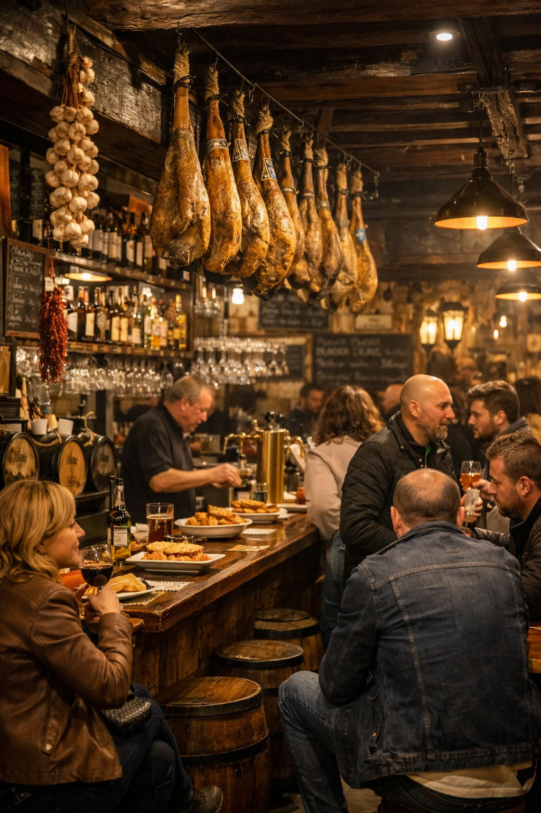

Bar Flechazo (Calle Platerías 2, Barrio Húmedo – León)
Descripción y especialidad
Bar Flechazo es uno de los templos del tapeo del Barrio Húmedo. Fundado en 1993 por José Luis “Pepe” Campelo, el local ganó fama por servir una única tapa: patatas fritas con pimentón. Las patatas, cortadas en dados y fritas a fuego lento, se condimentan con pimentón dulce o picante y se sirven gratuitamente con cada bebida. Un reportaje explica que el bar utiliza una freidora exclusiva para las patatas, evitando contaminaciones y convirtiéndolas en una opción segura para celíacos. Su ambiente es informal, con una barra pequeña y siempre concurrida; conviene ir pronto para encontrar hueco. Tras el fallecimiento de su fundador en 2024, el bar sigue abierto y continúa siendo una parada indispensable del barrio.
Información práctica
- Dirección: Calle Platerías 2, en pleno Barrio Húmedo (León).
- Horario: suele abrir todos los días desde mediodía hasta la noche; la cocina cierra a primera hora de la tarde.
- Tapa destacada: patatas fritas con pimentón (puede pedirse más o menos picante).
- Precio: económico (la tapa se sirve gratis con la consumición).
- Observaciones: es un bar pequeño, sin servicio de mesa, por lo que se suele comer de pie; se aconseja llevar efectivo, ya que no siempre se aceptan tarjetas.